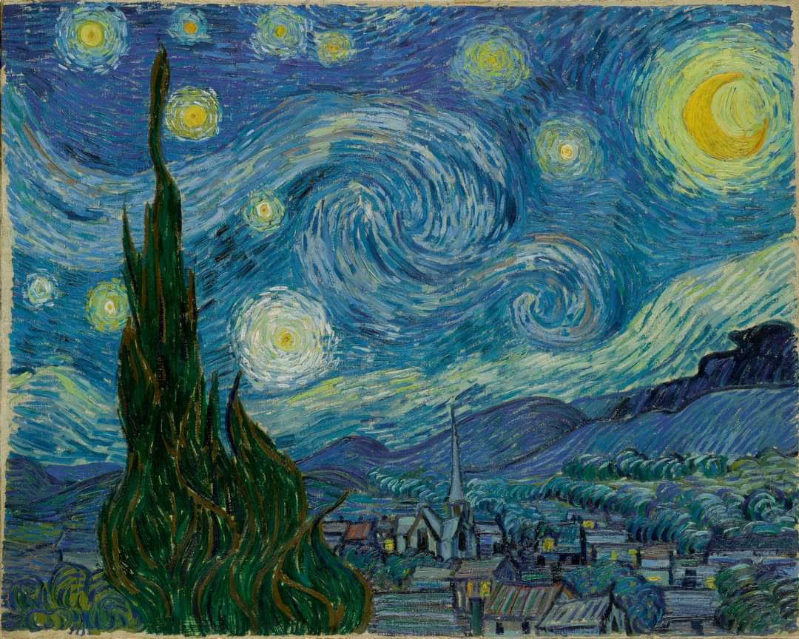

Starry Night is one of the most recognized pieces of art in the world. It is absolutely everywhere, too. It can be seen on coffee, mugs, t-shirts, towels, magnets, etc. Honestly, it sometimes feels as if the painting’s fame has exceeded that of its creator. It is a magnificent piece of art. That Starry Night resonates with so many people is a testament to how its beauty is timeless and universal.
The storry of starry night:
Vincent van Gogh painted Starry Night in 1889 during his stay at the asylum of Saint-Paul-de-Mausole near Saint-Rémy-de-Provence. Van Gogh lived well in the hospital; he was allowed more freedoms than any of the other patients. If attended, he could leave the hospital grounds; he was allowed to paint, read, and withdraw into his own room. He was even given a studio. While he suffered from the occasional relapse into paranoia and fits - officially he had been diagnosed with epileptic fits - it seemed his mental health was recovering.Unfortunately, he relapsed. He began to suffer hallucination and have thoughts of suicide as he plunged into depression. Accordingly, there was a tonal shift in his work. He returned to incorporating the darker colors from the beginning of his career and Starry Night is a wonderful example of that shift. Blue dominates the painting, blending hills into the sky. The little village lays at the base in the painting in browns, greys, and blues. Even though each building is clearly outlined in black, the yellow and white of the stars and the moon stand out against the sky, drawing the eyes to the sky. They are the big attention grabber of the painting.
Starry Night Over the Rhône
Starry Night Over the Rhone (September 1888) was one of three paintings made during the same month that incorporate the night sky and stars as fundamentally symbolic elements. He also painted Cafe Terrace at Night, and a portrait of his friend Eugene Boch which was perhaps the most symbolic of the three.
Starry Night Over the Rhone was painted at a spot on the banks of river which was only a minute or two's walk from the The Yellow House on the Place Lamartine which Van Gogh was renting at the time. The night sky and the effects of light at night provided the subscribeject for some of his more famous paintings, including The Starry Night, the most famous Van Gogh night stars painting.

”For my part I know nothing with any certainty, but the sight of the stars makes me dream.”